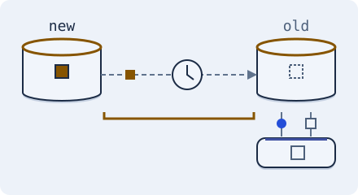

Scale the data · 3 minutes
Copies are a little behind
Read copies share the load, but they trail the original by a moment.
Open this lesson
Many readers, one writer
A busy database can keep copies called replicas. All changes go to the primary, which sends them on. Replicas answer reads, so one database becomes many. With asynchronous replication, changes arrive later, so a replica can be slightly out of date.
Stale on purpose
An acknowledged primary write is not yet an applied replica write. Advance delivery and read the actual versions.
Try the idea
Keep App servers connected to SQL database for writes. Place Read replica beside the database, then connect SQL database to Read replica to copy changes. Next, connect App servers to Read replica for reads. Select Read replica and set its replica count to 4 at size M. At peak, 8,280 reads/s share 5 copies, each handling ≈ 8,000 reads/s; 720 writes/s stay on the primary at ≈ 2,000 writes/s capacity. Primary busy is ≈ 36% writes + 21% reads = 57%. Keep it below 70 percent for a simulated minute.
Key numbers
- Normal replica lag
- ≈ 100 ms. approx.
- Reads one replica handles
- ≈ 8,000 a second. simple queries, approx.
- Primary load with 4 replicas
- ≈ 57% busy at peak. 720 writes/s ÷ 2,000 + (8,280 reads/s ÷ 5 copies) ÷ 8,000 ≈ 36% + 21%. Keep the app-to-primary write link and both replica links.
- Writes
- still only on the primary. replicas do not add write capacity
Check your reasoning
Think through these questions before opening the lesson. In the game you can test the idea and compare your reasoning.
- Where do writes go with read replicas?
- You post a comment and refresh. It is missing. Likely cause?
- Do replicas add write capacity?
The key point
Replicas scale reads. Asynchronous replicas can lag behind the primary; synchronous replication waits for the required acknowledgements before confirming a write, trading latency for stronger guarantees.
Practise this idea
- Medium
Pharmacy stock and refills
A pharmacy chain with 4,000 stores tracks how many boxes of each medicine every store has, takes refill requests, and shows patients which nearby store has their medicine today. If the system says a store has a box that is gone, a patient makes a wasted trip.